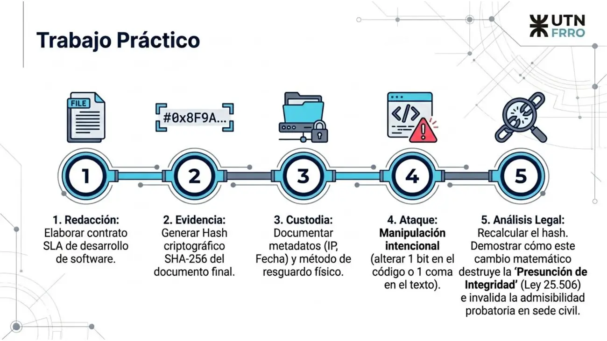

TP: contrato, hash y ataque de integridad (2026)
Eje 3: contratos electrónicos, 2026
Enunciado


Propuesta de respuesta
Respuesta no verificada. La propuso Luta Studios con inteligencia artificial y ningún docente la revisó. Puede tener errores.
1. Redacción. Un SLA de desarrollo de software es un contrato, así que lleva consentimiento, objeto y causa, y se hace por escrito para poder probarlo. Este esqueleto es un ejemplo armado para esta propuesta.
CONTRATO DE DESARROLLO DE SOFTWARE
CON NIVELES DE SERVICIO
PARTES. El CLIENTE, una empresa que encarga el
sistema, y el PROVEEDOR, una empresa de desarrollo.
OBJETO. El PROVEEDOR desarrolla, instala y mantiene
durante 12 meses un sistema de turnos en línea
para el CLIENTE.
NIVELES DE SERVICIO.
1. El PROVEEDOR garantiza una disponibilidad
mensual del 99,5 % del sistema.
2. Responde un incidente crítico en menos de
4 horas.
3. Corrige un incidente crítico en menos de
48 horas.
PRECIO Y FORMA DE PAGO. 30 % al firmar, 40 % a la
entrega y 30 % después de 3 meses sin incidentes
críticos.
PENALIDADES. Por cada punto de disponibilidad por
debajo de lo pactado, el PROVEEDOR descuenta un 5 %
del abono de ese mes.
PROPIEDAD INTELECTUAL. El código queda para el
CLIENTE al pagar el total.
CONFIDENCIALIDAD. Ninguna parte divulga los datos
de la otra.
JURISDICCIÓN. Tribunales ordinarios de Rosario.
FIRMAS. Las dos partes, con firma digital.2. Evidencia. Se calcula el SHA-256 del documento final, el PDF firmado, con una herramienta como QuickHash-GUI, que el apunte de pericia nombra para calcular y verificar hashes. El valor se anota junto al documento.
Para verlo sin el PDF, se puede hashear la cláusula 1 sola, en una línea, «El PROVEEDOR garantiza una disponibilidad mensual del 99,5 % del sistema.», en UTF-8 y sin salto de línea al final. Da esto.
d5e1a11bfc2568f5e3098044c5ad0b5b91b37f8070b142672d98fefcbafda7cd3. Custodia.
| Dato | Qué se anota |
|---|---|
| Archivo | Nombre, tamaño y que es la versión final |
| Hash | Algoritmo (SHA-256), valor, y fecha y hora en que se calculó |
| Origen | Dirección IP y equipo desde donde se firmó y se envió, con fecha y hora |
| Cadena de custodia | Quién tuvo el archivo, cuándo y qué hizo con él |
| Resguardo físico | Una copia en un pendrive, dentro de un sobre cerrado y firmado, guardada bajo llave. La copia también se hashea |
Hashear la copia es lo que pide la ISO/IEC 27037 para los duplicados maestros, para detectar una manipulación accidental o intencionada.
4. Ataque. Se altera la cláusula 1 de dos formas y se recalcula el hash.
Original, «...del 99,5 % del sistema.»
d5e1a11bfc2568f5e3098044c5ad0b5b91b37f8070b142672d98fefcbafda7cd
Coma movida, «...del 9,95 % del sistema.»
f91e948c6874821e15159416979ee6e6d9710e9cf35501ff2879b066160ce9f4
Un bit, «...del 99,4 % del sistema.»
f542ec1a190ea6509f708f6c386c14eb1f71648ee91b04c702eac8fdf21fe04dEl 5 se guarda como el byte 0x35 y el 4 como 0x34, así que pasar de 99,5 a 99,4 cambia un solo bit. Aun así, el hash nuevo difiere del original en 114 de sus 256 bits, y el de la coma movida, en 126. En el texto casi no se nota, y la disponibilidad prometida pasa de 99,5 % a 9,95 %.
5. Análisis legal.
- Se recalcula el hash del documento que se presenta y se compara con el anotado en la custodia. No coinciden, así que el documento no es el que se firmó.
- La firma digital se presume íntegra. «Se asume legalmente inalterado», y la integridad es el tema del art. 8 de la Ley 25.506. Esa presunción se apoya en la verificación, en la que el receptor recalcula la huella y la compara con la que firmó el emisor. Con un bit cambiado las huellas no coinciden, la verificación falla y el documento pierde la presunción de integridad.
- Sin la presunción, quien quiera usar el documento tiene que probar que no cambió, y el hash prueba lo contrario.
- Un juicio por el contrato va al fuero civil, porque es una disputa entre particulares por un contrato. Ahí, una evidencia sin hash verificado es fácilmente impugnable, y si se rompe la cadena de custodia pierde su valor probatorio ante el juez.
El hash prueba que el documento cambió, pero no quién lo cambió. Eso lo cuenta la cadena de custodia.
Respuesta no verificada. Puede tener errores.
Se armó con Eje 3, secciones Qué es un contrato y Elementos, Eje 2, Electrónica contra digital, Ley 25.506 y Firmar y verificar, y Eje 5, Hash y cadena de custodia, Herramientas e ISO/IEC 27037. Los tres hashes se calcularon y se comprobaron con dos herramientas distintas.
Quedó en duda: El material da el tema del art. 8 de la Ley 25.506, no su texto. El contrato y sus cifras son un ejemplo. El hash de un PDF depende de todos sus bytes, así que volver a guardarlo puede cambiarlo aunque el texto quede igual. Calculalo sobre el archivo final y no lo toques después. «Invalida la admisibilidad probatoria» es la frase de la consigna. El material dice que la evidencia pierde su valor probatorio ante el juez.